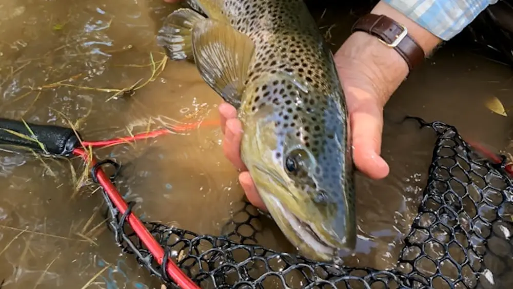
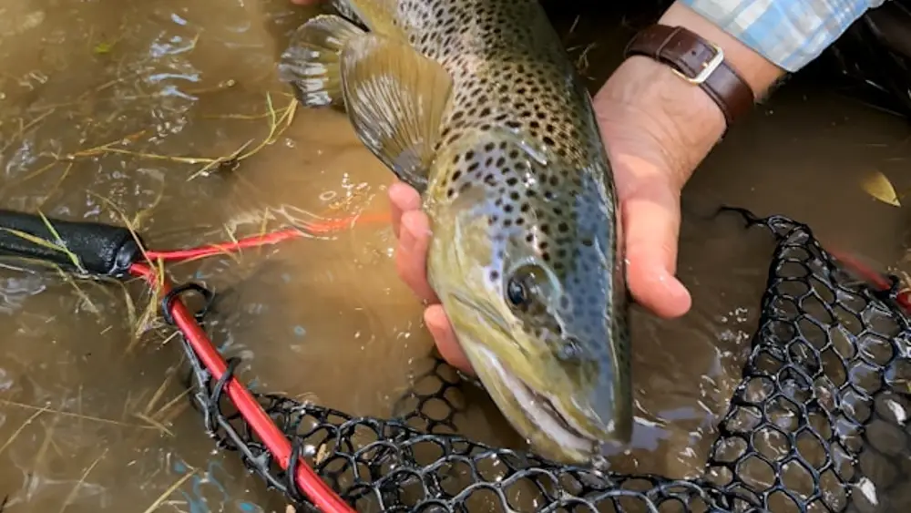

Trout Fishing
Brook Trout
Brook trout fishing is an artful pursuit, as much about the immersion in the wilderness as it is about the catch. A fisherman's approach is quiet and contemplative, whether casting flies with precision to mimic the dance of insects upon the water's surface or reeling in a spinner to to entice a territorial strike. When a brook trout hits, it's subtle, a soft pull, a test of attentiveness. When you hook one the world shrinks down to the arc of your rod and the flash of the trouts skin against that clear, cold stream. Whether you're a catch and release fisherman or a guy putting food on the table there's a silent acknowledgment of the trout's beauty and the purity of its habitat. These moments take you away from the world and solidify skill, patience and an affinity with the natural world.
Rainbow Trout
Rainbow trout are like living jewels of freshwater streams. They're sleek and strong, with a shiny, blue-green back that fades to a silvery belly. The real showstopper is the pinkish-red stripe that runs all along their side, from gills to tail, which gives them their name. Dotted with a sprinkle of black spots across their whole body, they're one of the prettiest fish you can pull out of the water. They're not just good-looking, though; these fish are known for being tough fighters when hooked, making them a favorite catch for anglers.
Brown Trout
 

Brown trout carry an air of mystery and rugged beauty. They boast a golden-brown body that seamlessly blends with the streams and rivers they inhabit, making them masters of camouflage. Along their sides, you'll notice reddish-orange spots encircled by a lighter halo, interspersed with darker, more irregular spots that extend to their dorsal fin and even their tail. These fish are wily and cautious, often outsmarting even the most seasoned anglers with their cunning. Catching a brown trout is a testament to patience and skill, as they tend to be more elusive than their rainbow cousins. They embody the wild spirit of the waters they live in, challenging fishermen to understand and respect the subtleties of nature